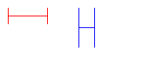
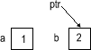
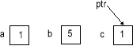

Name: ________________________________________________________
Umail Address: __________________________________@ umail.ucsb.edu
Circle Lab section: 3PM 4PM 5PM
Link to Printer Friendly PDF Version
Please write your name only on this page. That allows me to grade your exams without knowing whose exam I am grading.
This exam is closed book, closed notes, closed mouth, cell phone off,
except for:
There are 100 points worth of questions on the exam, and you have 3 hours (180 minutes) to complete the exam.
A hint for allocating your time:
That will leave you with 80 extra minutes to check your work, or come to problems that gave you trouble.
double: one called lat , and another called lng (note that you can't use the name long since long is a C language keyword.) struct LatLng (from the previous question).
void function called initLatLng that takes three parameters:lPtr that is a pointer to a struct latLngtheLat of type doubletheLng of type doubleinitLatLng. The function should initialize the values in the struct pointed to by lPtr with the values passed in in the two parameters, theLat and theLng.struct LatLng with the name sbaAirportinitLatLng() function to initialize the variable sbaAirport to latitude 34.43, longitude -119.84#include "latLng.h" before the main—you can assume that your definition of struct LatLng from question 1 and the function prototype for initLatLng both appear inside that header file.
char thisCity[20] = "Santa Barbara";
char thatCity[20] = "Los Angeles";thatCity = thisCity;thatCity points, and you can't change where the name of an array points in C. #include <string.h> appears at the top of the program.)sumArray1() a recursive function? Why or why not? (Be specific)sumArray2() a recursive function? Why or why not? (Be specific)
int sumArray1(int *a, int n)
{
if (n<=0)
return 0;
else
return a[0] + sumArray1(a + 1, n-1);
}
int sumArray2(int *a, int n)
{
int sum=0;
int i;
for (i=0;i<n;i++)
sum += a[i];
return sum;
}
094b1e2c 094b1e2c to an equivalent representation in ones and zeros.094b1e2c—actually mean?copyPos()—with a few parts missing that you need to supply.@@@ symbol// Copy all strictly positive numbers---those greater than zero---
// from array src into array dest. // n is the occupancy of array src. // Destination array should have capacity at least of size n. // Return the number of positive values copied into dest int copyPos(int *src, int *dest, int n) { int i; int count=0; for (i=0;i<n;i++) { if ( ______________________ > 0) // @@@ (4 pts) { _____________________ = src[i]; // @@@ (4 pts) count++; } } return count; }
mysteryFunction. As parameters, it takes an array of integers a, and the length of that array n as parameters, and returns an integer. What it actually computes is a mystery for you to solve.
int mysteryFunction(int *a, int n)
{
if (n==0)
return 0;
if (a[0]%2==0)
return a[0] + mysteryFunction(a+1, n-1);
else
return mysteryFunction(a+1, n-1);
}
Solve the mystery by figuring out what the mystery function computes, then decide which of the following is a more reasonable name for the function.
Among these possible function names, one (and only one) of them would be a reasonable answer to this question.
average, countEven, countMax, countMin, countNeg, countOdd, countPos, countSevens, indexFirstEven, indexFirstOdd, indexOfMax, indexOfMin, isSorted, maxValue, minValue, noDups, sum, sumEven, sumNeg, sumOdd, sumPos.
(12 pts) Together with this exam, there is a program (on a separate handout).
Assuming each of the expressions below appeared in this program, indicate the type they would have, or write error if the expression is not valid, e.g.
The first few are done for you as an example.
Hints--for full credit:
See solution
| Expression | Type |
| a | double * |
| *b | error |
| &e | |
| *f | |
| (*g).x | |
| h->y | |
| e->center | |
| j->m |
//snapshot of memory taken here)| code | picture |
|---|---|
|
|
int a=3, b=5, c=7, *ptr=&c; |
|
int a=3, b=5, c=7, *ptr1=&a, *ptr2=&b, *ptr3; |
struct Point { double x;
double y;
};
void initPoint(struct Point *p, double xVal, double yVal);
struct Point makePoint(double xVal, double yVal);
void drawLine(struct Drawing *d, struct Point p1, struct Point p2, int color);
Using these, write the definition for a function drawH that draws the letter H (as shown below).
Here is the function prototype for the drawH function you should define:
void drawH(struct Drawing *d,And here is a sample main, and its output
struct Point ul, // upper left corner
double w, // width
double h, // height
int color);
int main()
{
struct Drawing d;
initDrawing(&d, DRAWINGTYPE_COLOR, 200, 100, COLOR_WHITE);
|
 |
If you need extra room, use the space on the next page
Extra space for your answer to question 14
Total points: ?
Program for question about types
// types.c Code for exam question, 11/15/2009
// P. Conrad for CS16, 09F, UCSB
#include <stdio.h>
struct Point {
double x;
double y;
};
struct Date {
int d;
int m;
int y;
};
struct Circle {
struct Point center;
double radius;
};
int main(int argc, char *argv[])
{
double *a;
double b;
int *c;
int d;
struct Circle *e;
struct Circle f;
struct Date *i;
struct Date j;
struct Point *g;
struct Point h;
// Program does no useful work
// It is just the basis of a homework assignment about types
// Pretend there is useful code here, and then
// answer questions about the types of various expressions
// as if they appeared right here.
return 0;
}
Note that in the second example, the value 1 shown in the picture for c is not a typo.
This is because the line of code (*ptr) = a; changed that value from 5 to 1.
| code | picture |
|---|---|
|
 |
|
 |